ID — Indonesia
The main impact of a 200 basis-point (2.00 percentage-point) rise in United States interest rates on Indonesia is a 0.03% drop in GDP by the 11th quarter — a minimal spillover, consistent with Indonesia's rank of 23rd by absolute GDP effect and its placement in the "minimal" band. The shock is a single US monetary tightening; nothing else is active. The peak GDP loss of −0.0336% of GDP is small in absolute terms, and the path is slow: only −0.0018% in Q1, deepening gradually through the first year, peaking at −0.0336% in Q11, then fading to roughly zero by Q18 and turning marginally positive (+0.0004%) in Q20. This is a limited, drawn-out spillover rather than a large hit.
Demand and trade. Household consumption (Consumption) tracks the GDP profile closely, falling to a peak of −0.0123% in Q11 and recovering to +0.0015% by Q20 — a modest drag on households. Private investment (Investment) is hit harder and earlier, peaking at −0.0937% in Q8, the deepest demand-side decline, before swinging to +0.029% by Q20 as the cost of capital eases. Net exports (the trade balance, since this model does not split imports from exports) move the other way: they improve, peaking at +0.0312% in Q8 and fading to +0.0003% by Q20, as the weaker real activity and stronger currency reshape trade. Government spending (Gov Spending) barely moves, peaking at +0.0049% in Q10 and returning to −0.0004% by Q20. Government debt (Gov Debt) drifts down to −0.0172% by Q15 and remains at −0.0098% in Q20, a small improvement in the fiscal position.
External / FX. The real exchange rate (Currency Strength) appreciates sharply, peaking at +0.2724% in Q8 and still +0.0093% above baseline in Q20. This is the dominant external channel: a stronger rupiah real rate. That lines up with the net-exports improvement — a stronger currency would normally hurt competitiveness, but here the trade balance improves anyway because domestic demand falls faster than the exchange-rate drag, so the net effect is a modest positive contribution to net exports.
Labour. Employment falls gradually, peaking at −0.0104% in Q14 and still −0.0043% below baseline in Q20 — a small but persistent labour-market cost. Unemployment rises in tandem, peaking at +0.0027 percentage points in Q12 and easing to +0.0006pp by Q20. Real wages are the notable labour story: they initially rise, peaking at +0.0210% in Q9, then turn negative after Q15 and fall to −0.0324% by Q20 — the largest labour-side effect, as inflation cools faster than nominal wages adjust.
Prices. CPI inflation (CPI Inflation) jumps to +0.0191 percentage points in Q1, fades quickly by Q4, turns negative in Q9, and ends at −0.0009pp in Q20. Domestic inflation (Domestic Infl.) follows the same shape, peaking at +0.0134pp in Q1 and ending at −0.0006pp. Firms' marginal cost (Marginal Cost) falls to −0.0200% by Q11 and returns to roughly zero by Q20. The initial inflation bump is a pass-through effect; the later disinflation reflects the demand weakness.
Financial conditions. The local policy rate (Policy Rate) initially rises +0.0107pp in Q1, peaks at +0.0211pp in Q3, then turns negative after Q10 and falls to −0.0315pp by Q15, ending at −0.0158pp in Q20 — a defensive hike followed by easing. Government yields move down: the 2-year yield (Govt 2Y Yield) peaks at −0.0272pp in Q12, the 5-year (Govt 5Y Yield) at −0.0128pp in Q9, and the 10-year (Govt 10Y Yield) at −0.0035pp in Q9. Bond prices (Bond Price) fall to −0.1943% in Q8, then swing positive after Q12 and end at +0.0659% in Q20. Equity prices (Equity Index) are the deepest financial hit, peaking at −0.2878% in Q8 and still −0.0073% below baseline in Q20. Tobin's Q (the value of installed capital) falls to −0.0656% in Q8 and recovers to +0.0203% by Q20. House prices (House Prices) decline steadily to −0.0315% by Q15 and remain −0.0245% below baseline in Q20. Bank credit supply (Bank Credit) contracts only marginally, peaking at −0.0025% in Q17. Lending spreads (Credit Spread) widen by a trivial +0.0001pp at peak — essentially no spread response.
Sectoral and capital. Manufacturing GDP (Manuf. GDP) is the hardest-hit sector, falling to −0.0832% in Q8, far deeper than the aggregate, before recovering to +0.0018% by Q20. Services GDP (Services GDP) falls more gently, peaking at −0.0166% in Q11 and returning to +0.0002% by Q20. The capital stock (Capital Stock) erodes slowly to −0.0041% by Q15 and stays at −0.0036% in Q20 — a small, persistent scar from weaker investment.
Timing. The GDP hit is largest in Q11 at −0.0336%, and it has largely faded by Q18, with a marginal positive reading in Q20. The financial and investment effects peak earlier, around Q8, while labour and house-price effects peak later, around Q14–Q15. The shock is slow-burning and shallow.
Close. These are model impulse responses versus baseline, not forecasts. They describe how Indonesia's economy deviates from a no-shock path after a 200bp US rate rise, under the model's assumptions — a minimal spillover, with the currency and equity channels doing most of the visible work.
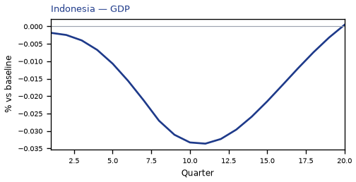
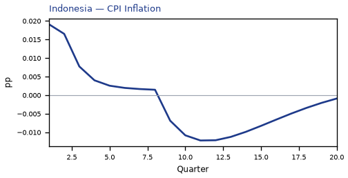
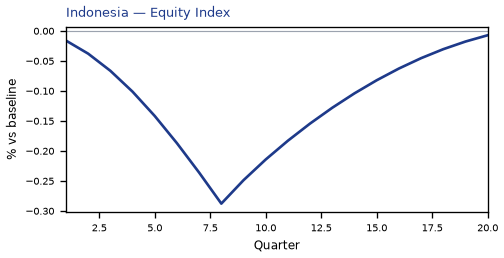
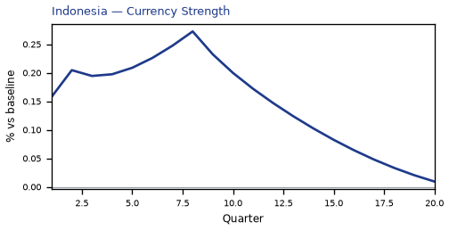
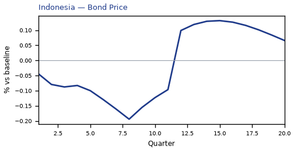
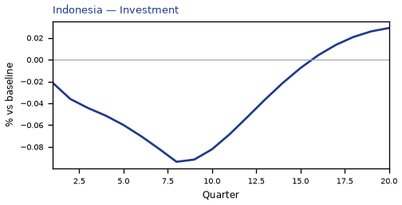
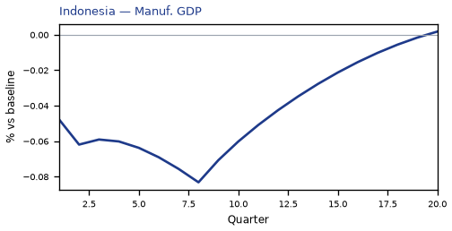
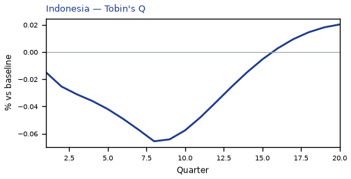
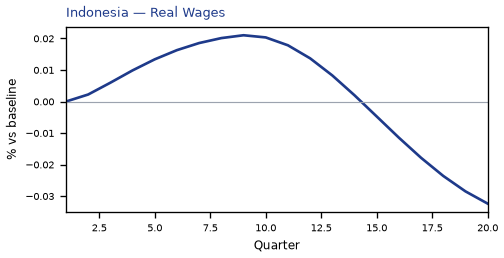

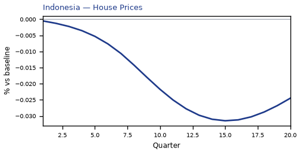
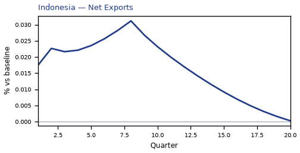
source=live · global_macro_v5 · contract v6 · Q1–Q20 JSON · not financial advice